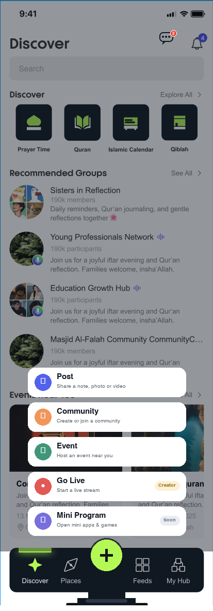

Fig.1 · Creation Entry / Publishing Hub Creation entry & unified hub
20 key improvements plan · #07 Diversified creation entries · Original screenshot as base (Discover home) + local modification layer
REQ-049 / 061 / 083: Today publishing has a single entry, the 5-tab bottom nav leaves no room for a creation anchor, and there is no reserved space for Live / Mini Program. Redesign as a fixed center FAB creation hub in the bottom nav: tapping expands semantic groups (Content / Community / Local / Live / Mini Program) and shows eligibility gates; Chat moves to a top-bar bubble (linked with Fig.2 Notification Center).
Before / After Original base + modification layer
Left: current state (Discover home, zero pixels altered) → Right: updated (FAB expanded, all other pixels untouched).
● Current: 5 tabs fill the bar, no creation hub

1
2
● Updated: center FAB expands into five creation entries

1
2
3
4
5
| # | Update | Details |
|---|---|---|
| 1 | Fixed center FAB | Brand-green FAB in the center of the bottom nav (former Chats slot), slightly raised above the bar, becoming the global fixed creation anchor (REQ-049 ② / REQ-061). |
| 2 | Semantic entry groups | Tapping the FAB expands 5 entry cards: Post (content) / Community / Event (local) / Go Live / Mini Program (ecosystem), each with an icon and a one-line boundary description (REQ-049 ④). |
| 3 | Eligibility gates up front | The Go Live card carries a Creator gate tag and Mini Program a Soon label, so permissions are clear before entry (REQ-049 ④). |
| 4 | Contextual entries kept | Contextual quick entries inside each tab (e.g. posting in Community, creating in Events) are kept — the FAB is the unified hub, not the only entry (REQ-049 ①). |
| 5 | Chats moved to top bar | The freed bottom slot goes to the FAB; the Chats bubble moves next to the top-bar bell (with unread red dot), linked with Fig.2 Notification Center; the 5-tab bottom bar is decluttered (REQ-061). |
When a guest taps any FAB entry, the Guest Mode registration wall applies (Deferred Publish, consistent with the GUEST-FLOW spec); the expanded menu supports swipe-up to dismiss.